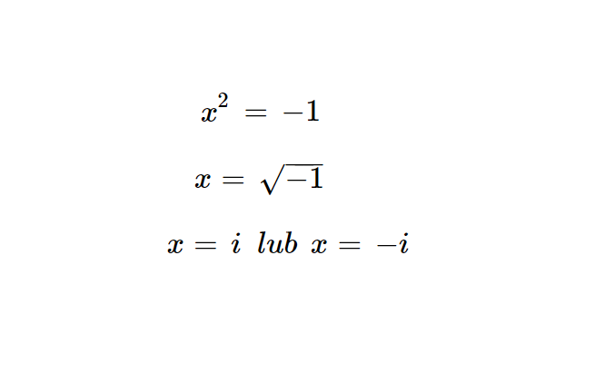
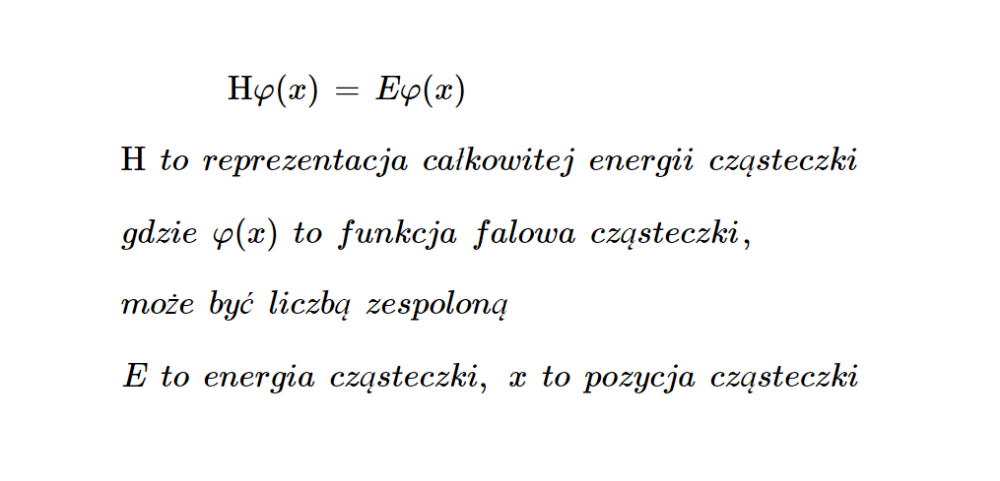
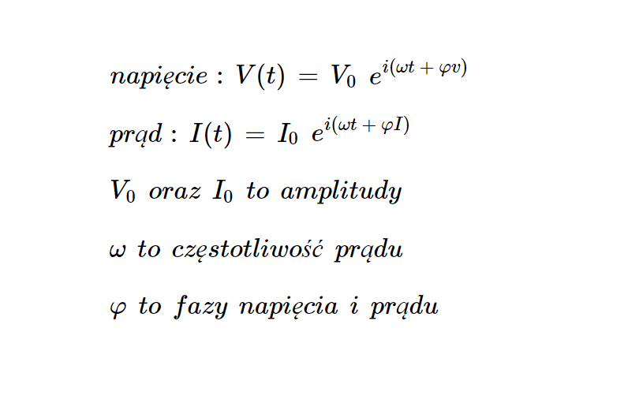
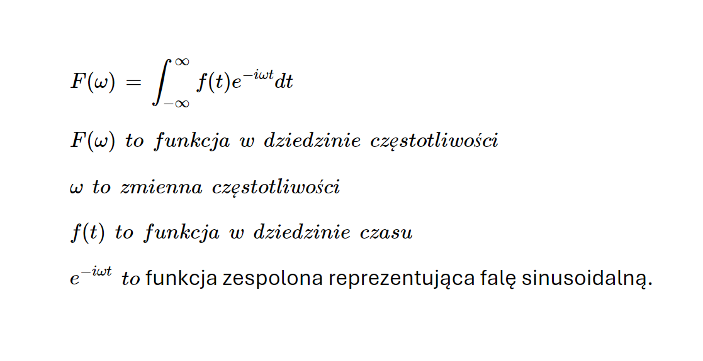
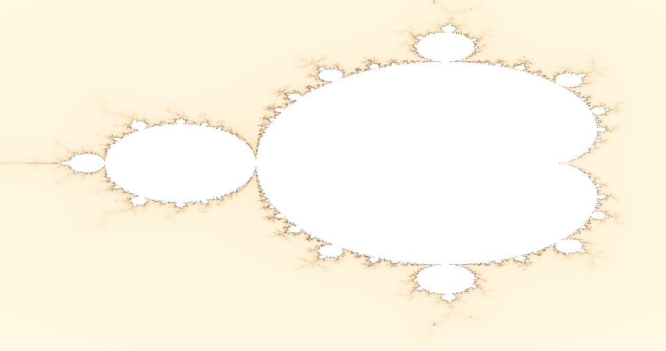
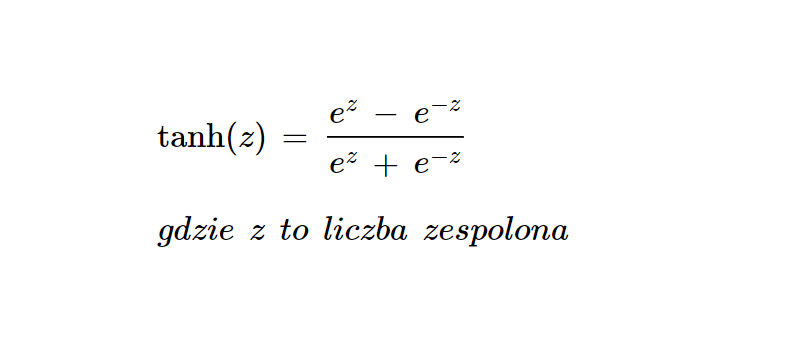

Wstęp
Liczby zespolone mimo że są abstrakcyjnymi obiektami matematycznymi, to znalazły one zastosowanie w wielu dziedzinach nauki i techniki. Są one wykorzystywane w fizyce, chemii, informatyce, a także w matematyce.

Matematyka
W matematyce liczby zespolone są wykorzystywane do rozwiązywania równań kwadratowych, równań różniczkowych oraz w geometrii analitycznej. Są one również używane w teorii liczb i algebrze abstrakcyjnej.

Równania falowe, mechanika kwantowa
W mechanice kwantowej liczby zespolone są wykorzystywane do opisu falowych funkcji falowych. Przykładem jest równanie Schrödingera opisujące zmiany cząsteczek w czasie i przestrzeni.

Elektromagnetyzm
Liczby urojone są wykorzystywane w prądach przemiennych, gdzie prąd oraz napięcie są zapisywane w ich postaci. Szczególnie często używa się ich gdy obwody mają formę sinusoidalną.

Transformacja Fouriera
Transformacja Fouriera pozwala przekształcić funkcję z przestrzeni czasu na przestrzeń częstotliwości. Jest ona powszechnie używana w przetwarzaniu sygnałów, obrazów, dźwięku, a także w analizie danych. Bez niej, telefony by nie dzwoniły, filmy by nie grały a Wi-Fi by nie działało.

Fraktale
Fraktale to obiekty, które są samopodobne, czyli wyglądają tak samo na różnych skalach.
Najbardziej znanymi są zbiór Julii oraz zbiór Mandelbrota.

Ai, uczenie maszynowe
Liczby zespolone są wykorzystywane w uczeniu maszynowym do analizy danych, rozpoznawania wzorców, a także do tworzenia modeli predykcyjnych. AI wykorzystuje liczby zespolone do przetwarzania sygnałów, co pozwala na bardziej efektywne i dokładne wyniki.
